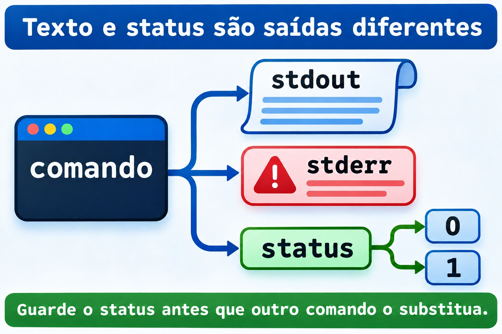
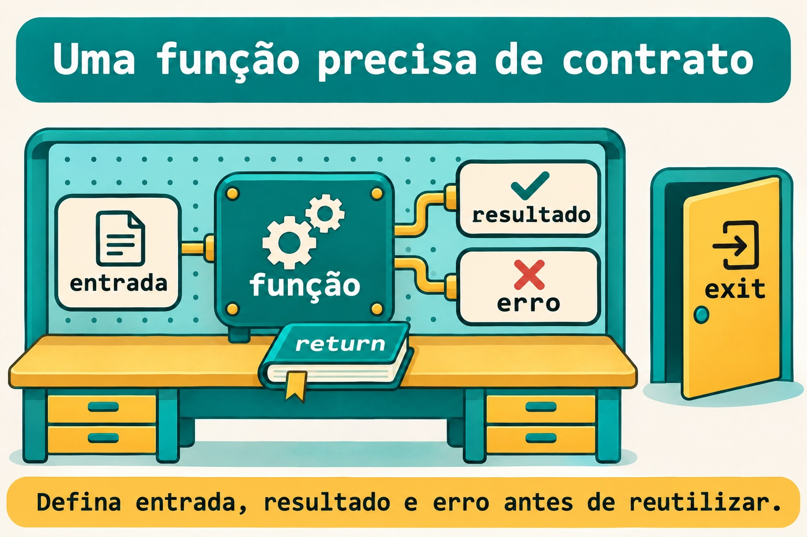

Aula 15.2 · Scripts robustos
Uma automação confiável precisa dizer o que aceita, o que entrega e como falha. Você vai transformar um comando de leitura em um script com argumentos validados, funções, decisões e códigos de saída. Tudo fica em arquivos privados do lab, nas duas VMs.
Núcleo desta aula: valide entradas, proteja argumentos com aspas, preserve o status e trate falhas explicitamente. Opções do shell ajudam, mas não substituem o contrato. O resto é aprofundamento.
| Ficha | |
|---|---|
| Módulo | M15 · Shell e ambiente, aula 2 de 5 |
| Quando | Semana 20 |
| Ao final | Você escreve um script de leitura com contrato de entrada e falha verificável |
| Pré-requisitos | Aula 15.1, testes, redirecionamentos e permissões de execução |
| Tempo | Cerca de 90 minutos |
| Snapshots | m15a2-inicio e m15a2-fim nas VMs 201 e 202 |
1 · Aquecimento
- Por que um script não deve depender de um alias do terminal?
- O que acontece com um caminho com espaços quando você expande uma variável sem aspas?
- Qual processo recebe uma variável exportada depois que você inicia um novo comando?
2 · Por que importa
Um script recebe um caminho vazio e continua executando os próximos comandos. Outro imprime “OK” depois de uma leitura que falhou. O problema começa antes da tarefa: faltou definir o que uma execução bem-sucedida significa.
Nesta aula o script só lê arquivos. Mesmo assim, você vai exigir argumentos corretos e códigos observáveis. O hábito será o mesmo quando a tarefa puder alterar um servidor.
3 · Modelo mental
Um script é uma ordem de serviço para a equipe do prédio. A entrada identifica a tarefa e o local. A função faz um trabalho definido. A saída informa o resultado; o status informa se o contrato foi cumprido.
argumentos -> validação -> função -> resultado em stdout
| |
erro em stderr status final
Ponte Windows
| Ideia | Bash | Comparação útil |
|---|---|---|
| Parâmetros do programa | "$@", $# e posições | Separar valor de quantidade |
| Resultado para outro programa | stdout | Manter o dado legível por máquina |
| Diagnóstico | stderr | Não misturar aviso com resultado |
| Resultado operacional | Código de saída | O chamador precisa decidir pelo status |
4 · O essencial
Contrato antes da implementação
O script do lab aceita exatamente dois argumentos não vazios: modo e caminho. --count conta caracteres de fim de linha; --list mostra o conteúdo, incluindo a última linha sem newline. Uso incorreto retorna 2; arquivo inválido ou falha de processamento retorna 3.
O conteúdo vai para stdout. Mensagens de diagnóstico vão para stderr. Esses códigos são o contrato deste script, não um significado universal de todo programa Linux.
Aspas conservam argumentos
"$@" conserva cada argumento separadamente. "$file" conserva um caminho com espaços como um argumento. Um teste de quantidade precisa ocorrer antes de ler posições que talvez não existam.
Status precisa ser preservado
$? pertence ao comando que acabou de terminar. Outro comando o substitui. Use a condição de if ou guarde o número imediatamente, antes de imprimir qualquer mensagem.


Funções e opções do shell
Uma função recebe argumentos e devolve um status com return. exit encerra o script. No lab, funções produzem um resultado simples e o corpo principal decide o encerramento.
set -u ajuda a detectar variáveis ausentes. pipefail faz uma pipeline refletir falhas anteriores ao último comando. set -e tem exceções por contexto; não será usado como substituto de tratamento explícito.


Rocky × Debian
| Item | Rocky 9 | Debian 13 |
|---|---|---|
| Interpretador explícito | /bin/bash | /bin/bash |
| Script desta aula | Usa recursos de Bash | Usa recursos de Bash |
| Validação sem execução | bash -n | bash -n |
| Teste de comportamento | Mesmos casos de entrada | Mesmos casos de entrada |
5 · Lab guiado
Use student e uma pasta nova nas duas VMs. O script lê apenas arquivos fornecidos e não usa sudo.
Passo 1 · Criar dados conhecidos
Palpite: um caminho com espaços muda a quantidade de argumentos quando é passado corretamente?
No host Proxmox:
qm snapshot 201 m15a2-inicio
qm snapshot 202 m15a2-inicioNas duas VMs, confirme que a pasta não existia antes de criá-la.
test ! -e "$HOME/m15a2"
mkdir -m 700 "$HOME/m15a2"
printf 'alpha\nbeta\ngamma\n' > "$HOME/m15a2/with spaces.txt"Saída esperada: arquivo privado com três linhas terminadas por newline.
Verifique: use wc -l < "$HOME/m15a2/with spaces.txt" e confira 3.
Passo 2 · Escrever o contrato em código
Palpite: qual teste impede a leitura de $2 quando só um argumento foi enviado?
cat > "$HOME/m15a2/resumir.sh" <<'EOF'
#!/bin/bash
set -u
set -o pipefail
usage() { printf 'usage: resumir.sh --count|--list FILE\n' >&2; }
list_lines() { cat -- "$1"; }
if [[ $# -ne 2 ]]; then
usage
exit 2
fi
for argument in "$@"; do
if [[ -z $argument ]]; then usage; exit 2; fi
done
mode=$1
file=$2
case $mode in
--count|--list) ;;
*) usage; exit 2 ;;
esac
if [[ ! -f $file || ! -r $file ]]; then
printf 'unreadable regular file: %s\n' "$file" >&2
exit 3
fi
case $mode in
--count)
if ! wc -l < "$file"; then
printf 'processing failed\n' >&2
exit 3
fi ;;
--list)
if ! list_lines "$file"; then
printf 'processing failed\n' >&2
exit 3
fi ;;
esac
EOF
chmod 0700 "$HOME/m15a2/resumir.sh"Saída esperada: script com interpretador, validação antes do uso dos argumentos, função e escolha de modo.
Verifique: a função não depende de alias, arquivo de início ou variável pessoal do terminal. O teste prévio não torna a leitura atômica: uma falha detectada durante o processamento também retorna 3, mas pode já ter produzido parte de stdout.
Passo 3 · Validar sem executar
Palpite: sintaxe aceita comprova que todas as entradas estão corretas?
/bin/bash -n "$HOME/m15a2/resumir.sh"
printf 'syntax_status=%s\n' "$?"Saída esperada: syntax_status=0. Isso valida a estrutura, não lê os arquivos de teste nem executa os caminhos do programa.
Verifique: identifique os casos que ainda faltam testar: modo válido, modo inválido, argumento ausente e arquivo inexistente.
Decida 1
Qual entrada exige uma falha de uso, antes de ler o arquivo?
| Opção | Entrada |
|---|---|
| A | --count e um caminho existente |
| B | Apenas --count, sem caminho |
| C | --list e um arquivo legível |
Escolha B. A quantidade de argumentos faz parte do contrato.
Passo 4 · Exercitar sucesso e falha
Palpite: erro de modo e arquivo inexistente precisam ter o mesmo código neste contrato?
"$HOME/m15a2/resumir.sh" --count "$HOME/m15a2/with spaces.txt"
printf 'status=%s\n' "$?"
"$HOME/m15a2/resumir.sh" --list "$HOME/m15a2/with spaces.txt"
printf 'status=%s\n' "$?"
"$HOME/m15a2/resumir.sh" --wrong "$HOME/m15a2/with spaces.txt"
printf 'status=%s\n' "$?"
"$HOME/m15a2/resumir.sh" --count "$HOME/m15a2/missing.txt"
printf 'status=%s\n' "$?"Saída esperada: os dois primeiros casos retornam 0; o modo inválido retorna 2; o caminho inexistente retorna 3.
Verifique: confira separadamente o dado produzido e o status. A mensagem de erro não deve virar uma linha do resultado normal.
Agora compare os modos com um arquivo sem newline final. A contagem é 0, mas a listagem conserva delta. O newline do diagnóstico abaixo pertence ao teste, não ao arquivo.
printf 'delta' > "$HOME/m15a2/no-newline.txt"
for mode in --count --list; do
"$HOME/m15a2/resumir.sh" "$mode" "$HOME/m15a2/no-newline.txt"
rc=$?
printf '\nstatus=%s\n' "$rc"
donePasso 5 · Capturar resultado sem perder o status
Palpite: imprimir uma mensagem antes de guardar $? mantém o status original?
if result=$("$HOME/m15a2/resumir.sh" --count "$HOME/m15a2/missing.txt" 2> "$HOME/m15a2/error.txt"); then
printf 'result=%s\n' "$result"
else
rc=$?
printf 'failed_status=%s\n' "$rc"
fi
cat "$HOME/m15a2/error.txt"
(
set -o pipefail
false | true
printf 'pipeline_status=%s\n' "$?"
)Saída esperada: failed_status=3 e diagnóstico no arquivo de stderr. A pipeline do subshell retorna 1 com pipefail, embora o último comando dela tenha sucesso.
Verifique: o status foi guardado antes do printf. O subshell evita mudar as opções do terminal principal.
Decida 2
Uma função auxilia o script, mas falha. Qual forma preserva a decisão no chamador?
| Opção | Ação |
|---|---|
| A | A função devolve status e o chamador verifica |
| B | Ignorar stderr porque há stdout |
| C | Imprimir “OK” depois de qualquer falha |
Escolha A. O resultado de uma função precisa ser parte de seu contrato.
Passo 6 · Limpar temporário no encerramento
Palpite: uma saída de erro ainda executará uma limpeza registrada para EXIT?
cat > "$HOME/m15a2/temporario.sh" <<'EOF'
#!/bin/bash
set -u
tmp=$(mktemp "${HOME}/m15a2/tmp.XXXXXX") || exit 4
cleanup() { rm -f -- "$tmp"; }
trap cleanup EXIT
printf 'temporary=%s\n' "$tmp"
exit 7
EOF
chmod 0700 "$HOME/m15a2/temporario.sh"
/bin/bash -n "$HOME/m15a2/temporario.sh"
"$HOME/m15a2/temporario.sh"
printf 'status=%s\n' "$?"
find "$HOME/m15a2" -maxdepth 1 -name 'tmp.*' -printSaída esperada: status=7 e nenhum temporário restante. O nome foi criado por mktemp, dentro da pasta privada, e a remoção selecionou somente esse arquivo.
Verifique: o status planejado não desapareceu por causa da limpeza. EXIT não garante limpeza após morte abrupta que o processo não consegue tratar.
6 · Quebre e conserte
Quebra 1 · Caminho dividido
Sintoma: no subshell abaixo, um arquivo existente vira uma chamada com argumentos demais.
(
file="$HOME/m15a2/with spaces.txt"
"$HOME/m15a2/resumir.sh" --count $file
printf 'status=%s\n' "$?"
)Investigação: compare a quantidade recebida com a chamada entre aspas do passo 4.
Causa: a expansão sem aspas dividiu o caminho em palavras.
Conserto: passe "$file" como um argumento.
Verifique: a contagem volta a 3, com status 0.
Prevenção: proteja expansões de argumentos com aspas e teste caminhos com espaços.
Quebra 2 · Sucesso depois da falha
Crie uma cópia ruim separada para observar o erro de controle.
cat > "$HOME/m15a2/fragil.sh" <<'EOF'
#!/bin/bash
wc -l < "$1"
printf 'OK\n'
EOF
/bin/bash "$HOME/m15a2/fragil.sh" "$HOME/m15a2/missing.txt"
printf 'status=%s\n' "$?"Sintoma: aparece erro de leitura, mas o status final é 0.
Investigação: identifique o último comando executado na cópia frágil.
Causa: o printf teve sucesso e substituiu a falha anterior como status do script.
Conserto: use o script validado e trate explicitamente uma leitura que falha.
Verifique: para o caminho inexistente, o script correto retorna 3, não uma mensagem de sucesso.
Prevenção: teste os casos de falha antes de automatizar a execução.
Quebra 3 · Sintaxe alterada
Sintoma: uma cópia do script deixa de passar na análise antes de executar.
Investigação: plante o defeito somente em uma cópia, removendo seu esac.
sed '/^esac$/d' "$HOME/m15a2/resumir.sh" > "$HOME/m15a2/broken.sh"
/bin/bash -n "$HOME/m15a2/broken.sh"Causa: uma estrutura de decisão ficou incompleta.
Conserto: restaure só a cópia com o arquivo validado.
cp "$HOME/m15a2/resumir.sh" "$HOME/m15a2/broken.sh"
/bin/bash -n "$HOME/m15a2/broken.sh"Verifique: a análise volta a passar; depois repita um caso de sucesso e um de falha.
Prevenção: separe análise de sintaxe e teste de comportamento. Os dois são necessários.
Limpeza
Nenhum arquivo global ou serviço foi alterado. Guarde os scripts e resultados na pasta privada; confira que a experiência de temporários não deixou arquivos. Não apague caminhos calculados fora dessa pasta.
7 · Armadilhas
| Erro comum | O que fazer | Por quê |
|---|---|---|
| Sintaxe válida significa script correto | Exercitar entradas reais e inválidas | Sintaxe não verifica a intenção |
| Um modo “estrito” resolve todos os erros | Tratar falhas onde ocorrem | Opções do shell têm contextos e exceções |
| Mensagem de erro pertence ao resultado | Usar stderr | Outro programa pode ler stdout como dado |
| Temporário com nome previsível | Criar com mktemp | Evita conflito e reutilização indevida |
8 · Quiz
- Por que conferir
$#antes de ler$2? - O que
"$@"conserva? - Qual a diferença entre
returneexit? - Por que uma pipeline pode esconder a falha do primeiro comando?
wc -lconta registros sem newline final como se estivessem terminados?- O que ainda falta após
bash -nretornar sucesso?
9 · Cola
| Tarefa | Comando ou construção |
|---|---|
| Validar sem executar | bash -n script.sh |
| Conservar argumentos | "$@" |
| Ler linha sem interpretar barras | IFS= read -r line |
| Guardar status imediatamente | rc=$? |
| Diagnóstico separado | printf '%s\n' 'error' >&2 |
Flashcards: crie cinco cartões sobre argumentos, aspas, função, status e limpeza. Revise em D+1, D+3, D+7 e D+21.
10 · Checklist e fechamento
- [ ] Rodei os mesmos casos nas duas VMs.
- [ ] Testei caminho com espaços e arquivo inexistente.
- [ ] Diferenciei stdout, stderr e status.
- [ ] Não alterei opções permanentes ou arquivos globais do shell.
Último exercício: descreva o contrato do script sem ler o código. Depois confira se os testes cobrem cada exigência que você escreveu.
Reboot de conferência: reinicie uma VM por vez. Valide a sintaxe do script e repita o caso válido e o arquivo inexistente. Os resultados não devem depender de um alias ou variável do terminal anterior.
sudo systemctl rebootNo host Proxmox, depois da conferência:
qm snapshot 201 m15a2-fim
qm snapshot 202 m15a2-fim11 · Na vida real
Em um script que você tenha autorização para revisar, faça somente leitura do contrato, das validações e do tratamento de status. Não execute um script administrativo desconhecido apenas para observar o que acontece.
Quais entradas foram testadas? Qual falha pode ser mascarada por um comando posterior? A limpeza seleciona apenas recursos criados pelo próprio script? Registre a evidência sem copiar segredos.
12 · Aprofundar quando quiser
- Bash: status de saída, opções set e builtins.
- mktemp e wc: criação de temporários e definição de contagem.
DeepTutor (http://10.1.0.149:3782, KB "Curso Linux Sysadmin"):
!explica Mostre a diferença entre erro de uso, erro de leitura e resultado vazio num script Bash.!feynman Vou explicar por que printf depois de uma falha pode esconder o status. Aponte as lacunas.!quiz Crie seis casos de argumentos, aspas e códigos de saída para um script somente de leitura.
Gabarito comentado
Aquecimento
- O alias é configuração da sessão interativa, não dependência declarada do script.
- O shell pode dividir o valor em vários argumentos e ainda expandir padrões.
- O novo processo recebe uma cópia do ambiente exportado na sua criação.
Quiz
- Para rejeitar quantidade errada antes de acessar uma posição ausente.
- Cada argumento original, inclusive espaços dentro dele.
returndevolve controle e status da função;exitencerra o script.- Sem
pipefail, o status normalmente vem do último comando da pipeline. - Não. Ele conta caracteres newline; é preciso definir o formato de entrada e a métrica desejada.
- Exercitar entradas, resultados, falhas e o ambiente de execução real.
← Aula 15.1 · Ambiente do shell · Índice de aulas · Plano do curso: 15.3 em diante →